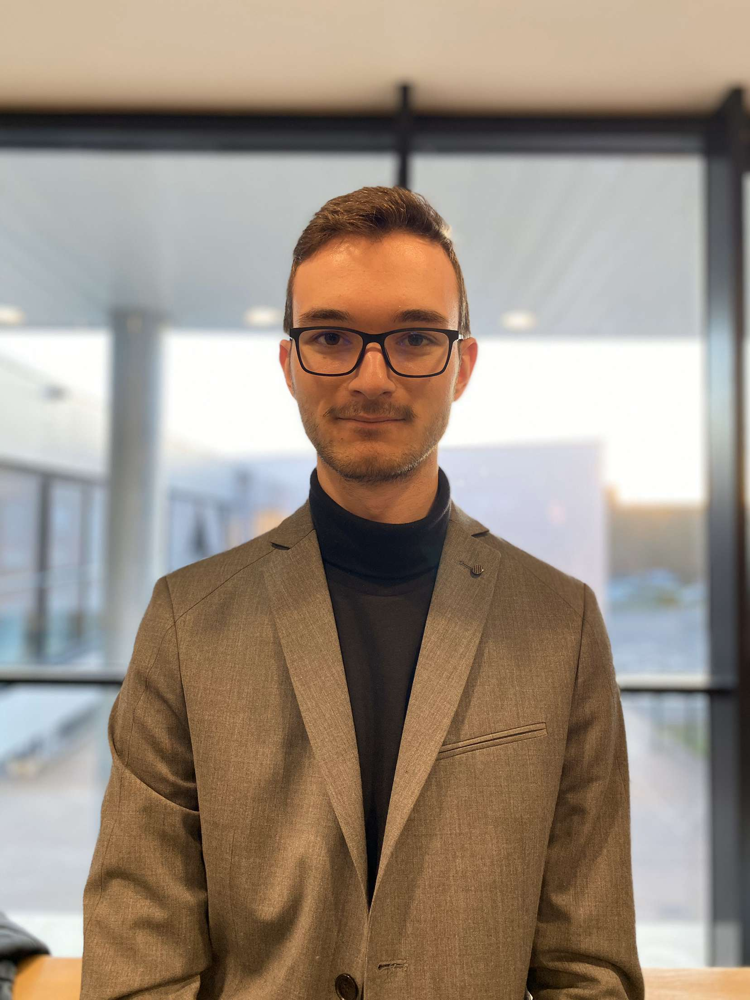
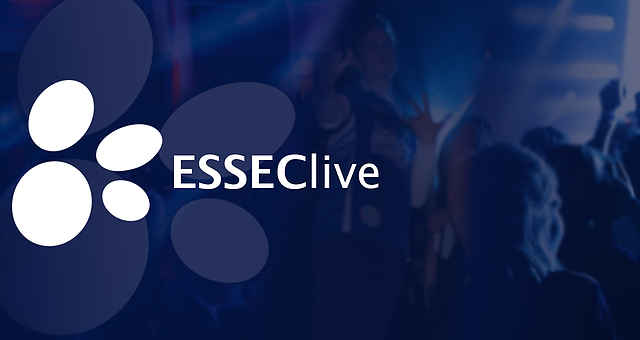

Hello, I'm Alexandre ! 😉
I am Alexander Fourmond, student in first year at the Essec Global BBA. I am fond of sports like handball, soccer or volleyball and generally outdoor activities. Welcome to my website !
Discover my Linkedin profil🏫 Education 🏫
2019- ESSEC Business School
2010-2019 highschool saint Joseph de Tivoli in Bordeaux. obtaining the baccalauréat with congrats
Experience
I am involved in "ESSEC LIVE", a big association in ESSEC, which covers the ESSEC's events through pictures. As member of the company approach department, my Job is really important for the association, and I am glad to be part of this adventure.

I have also been the assistant of a journalist for 1 week in June 2017, at the "Dépêche du Bassin", a weekly newspaper. Reading articles and publishing them have been a very enriching experience, which gave me new skills, both in writting and also communication, through interviews, for example.
🏐 Sports and extra-activities ⚽
As a great fan of sports, I am involved both in ESSEC's volleyball and handball team.
I am also really interested in cinema and music, and I am currently learning the guitare and the piano
I also really love music and cinema, as well as fashion.